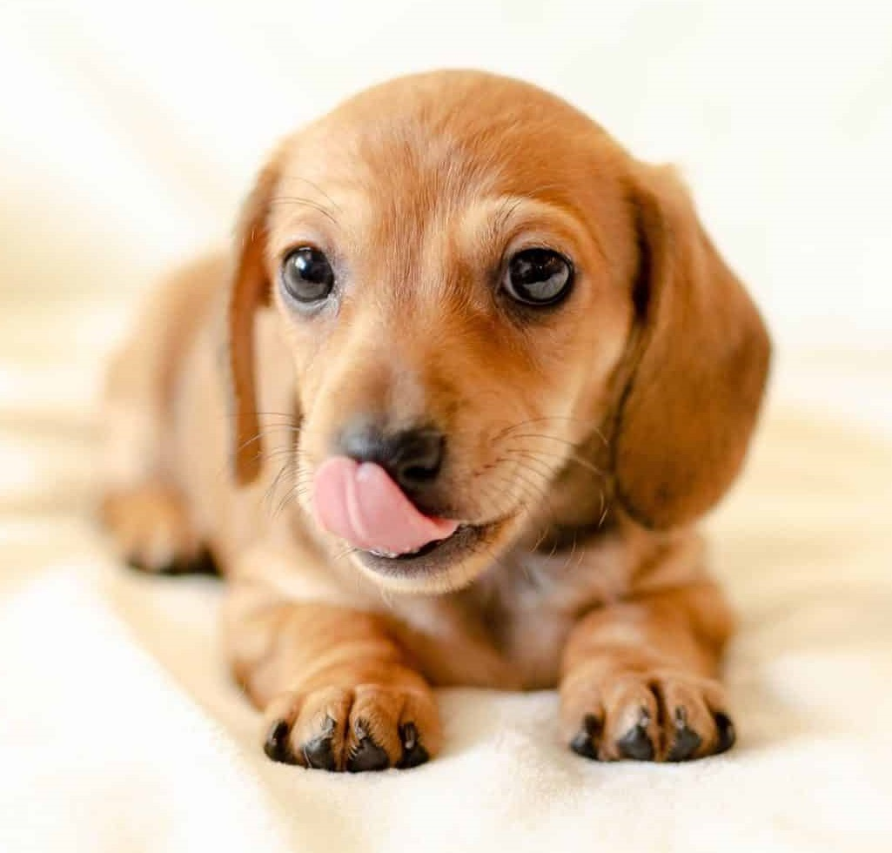

ダックスフンドは、その特徴的な長い体と短い足、そして活発な性格で知られる小型犬種です。「ウィンナー犬」や「ソーセージ犬」とも愛称で呼ばれることがあります。もともとドイツで、強い嗅覚と忍耐力を活かし、アナグマなどの穴掘り動物を狩るために繁殖されました。
ダックスフンドには2つのサイズ（スタンダードとミニチュア）があり、さらに3つの毛質（スムース、ロングヘアー、ワイヤーヘアー）が存在します。小柄ながらも勇敢で、元気で好奇心旺盛な性格を持っています。時には頑固な一面も見せますが、忠誠心が強く、多くの家庭で素晴らしい仲間となります。そのユニークな外見と友好的な性格が相まって、世界中で人気のある犬種です。
詳細
| 他の名称 | ウィンナー犬 ／ ソーセージ犬 |
|---|---|
| 誕生国 | ドイツ |
| サイズ | ミニチュア：ー13–15cm ／ スタンダード：20–23cm |
| 体重 | ミニチュア：5kg ／ スタンダード：7–15kg |
| 寿命 | 12–16年 |